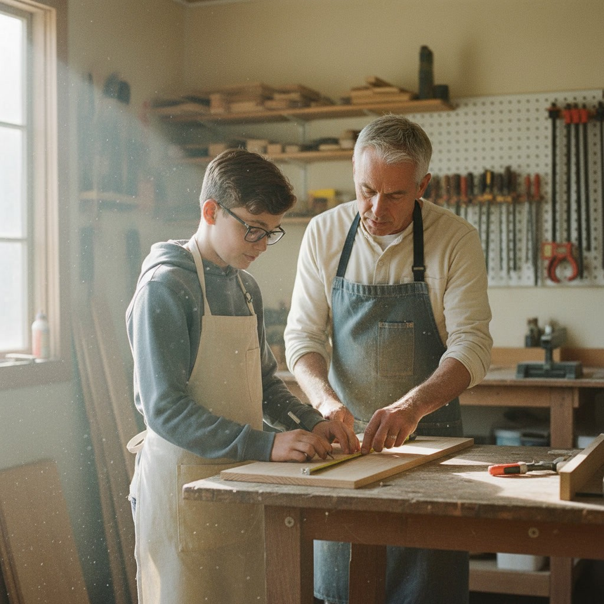

Two hours of practice. Four hours of making. Every adult knows your kid.
Soundline School is a private middle school for grades 6–8 on Long Island’s North Shore, opening September 2027. We’re choosing a building along the Miller Place–Port Jefferson Station corridor, and Port Jefferson Station is the likeliest. Ninth grade follows in September 2028, then a grade a year through twelfth.
Every student keeps the same advisor from sixth through eighth grade, and works by skill across the school, not by age.
Standard tuition for 2027–28 is $1,500 a month for five days. The founding rate stays fixed for as long as your child is enrolled. No application fee.
Two hours of math, reading and writing with a guide (our word for a teacher) at the table. Then four hours of seminar, science lab and six-week projects.
Students do real work, finish it, and show it to someone.
Math, reading, and writing at each student’s own pace, with a guide in the room. Nobody waits for the class to catch up, and nobody gets left behind it. Two hours, done well, and done.

History, literature, and science are taught by a person with a book, never by an app. Studio runs in six-week projects with a real audience: a video game, a robot, a sculpture, a short documentary, a zine the school press publishes, a song the ensemble performs.
No slides, no screen. A student, their work, and good questions.
A lesson at 3:15, then the homework desk until 5:30. Or the carline. The project stays at school.
Before sonar, sailors dropped a sounding line over the side to learn how deep the water was and what lay on the bottom. Only then did they set a course.
That’s where we start with your child: where they are, skill by skill, what sparks them, and how deep it runs. Then we set a direction together.
Middle school is three years. They go fast. Soundline suits a kid who is:
Students with IEPs keep their district services, and we help you request them. Soundline is not a religious school or a test-prep program.
We would rather you hear all of it from us.
We have no students yet, so we have no results to show you. What we can show you is the plan, the people, and the day, hour by hour.
New York doesn’t license private schools. We register with the state, the district reviews that what we teach is equivalent, and we start accreditation once we’re open.
Through the New York State Education Department, which runs a state and FBI criminal history check, before they start. New York makes this optional for private schools. We do it.
It is held by an independent escrow agent, not by us, and it comes back in full, for any reason, until the day we sign a lease.
We measure every student’s growth three times a year and publish whole-school growth, counting everyone. No child’s score is public; yours comes home.
Every Friday at 2:00, someone presents and something is performed. Families welcome.
An educator for over twenty years. She started as a classroom teacher, coached teachers in New York City schools for more than fifteen of them, and led the state team that wrote New York’s Quality Remote and Hybrid Teaching Framework and its Handbook for Virtual Schools.
A musician and teacher. He designs and runs music and STEAM programs for libraries across Long Island (escape rooms, instrument labs, world percussion) and teaches private lessons. He’ll know your child by Wednesday.
For more than thirty-five years she has taught dance to North Shore kids, many of them right at this age, and she has run businesses here her whole life, including her own salon. She makes sure every family feels seen, and handles every detail in between.
Designs how the school teaches: the sequence, the mastery gates, and how we know it worked. Co-wrote New York’s Quality Remote and Hybrid Teaching Framework and its Handbook for Virtual Schools. Teaches a live seminar every week.
We are hiring a math and science guide and a humanities guide for September 2027. You will meet them before the first day.
Monday to Friday, 8:30 to 3:00, with Extended Day until 5:30. Enroll, and that’s it. No homeschool paperwork.
Monday and Wednesday, 9:15 to 12:30, and Friday, 9:15 to 2:45. Same guides, same rooms, same studio. You keep your homeschool plan, and we hand you the course descriptions and hours logs to go with it.
Three grades under one roof, grouped by skill, not age — and we’re taking founding families now.
A rate that stays locked for as long as your child is enrolled, and a seat on the Family Council.
Twenty minutes on the phone with one of the four of us. Ask anything, the money questions included.
Tuition is published, the whole table. You see the number first, then decide — never the other way round.
After the call, if it’s a fit, $500 reserves a seat. It is held by an independent escrow agent, not by us, and comes back in full, for any reason, until the day we sign a lease.
“This is the answer to my prayers for my daughter.”
It does the fun things. Council families help choose the projects students take on, and work with people in town to bring kids and experiences together.
Each grade has ten to twelve seats, filled in the order families reserve. We’ll tell you where you stand before you pay anything.
Math, English, science and history every year, with the arts, physical education and health. That is everything New York expects of a middle school. Math, reading and writing are practiced every morning at each student’s level; history, literature and science are taught in seminar and lab.
Yes — the state tests in the spring, three mornings, no test prep. New York uses them to confirm a new school is teaching what it should, and we’d rather show that than argue about it. What you’ll see all year is growth, three times a year, for your own child.
Ninth grade opens here in September 2028, then a grade every year through twelfth. Your child can stay, or move on with a folder of work that shows what they can do: made, defended, and grown, every six weeks.
On the North Shore, along the Miller Place–Port Jefferson Station corridor. Port Jefferson Station is the likeliest. We announce the address the day we sign the lease.
Ask for a call. It is twenty minutes with one of the four of us, and there is no application fee. If it’s a fit, $500 reserves a seat, and the enrollment contract follows.
Your $500 is held by an independent escrow agent, not by us, and it comes back in full, for any reason, until the day we sign a lease. If the school doesn’t open after that, your money comes back too: we mail you a check.
Most likely. New York districts provide transportation to private schools up to fifteen miles away. You request it from your own district by April 1, and we’ll send you the request already filled in.
Twenty minutes on the phone with one of the four of us. Ask anything, the money questions included.
The button opens an email to hello@soundlineschool.com with four lines to fill in: your name, the best number, good times to reach you, and your child’s grade next September. One of the four of us calls you back.
Prefer to start in writing? Take the survey.